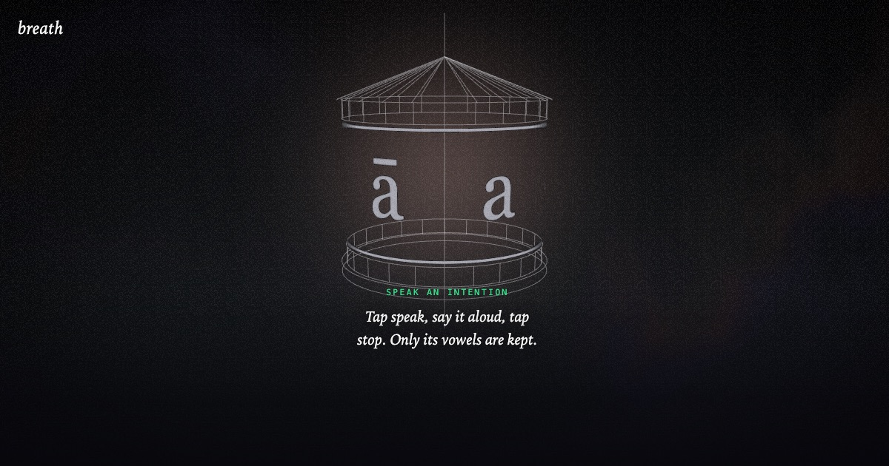

22 / project
breath
A prayer wheel that keeps only your vowels
A prayer wheel in the browser. Speak an intention, then spin the wheel. The vowels are lifted out of your recording and loop back as a mantra while the wheel turns. Keep it, or download it as a WAV.

The rite
Tap speak, say an intention aloud, tap stop. A trace of the recording shows which parts were kept, painted in their vowel colours. Spin the wheel to chant. It turns one way only: dragging it back slows it to rest.
A light behind the wheel swells and recedes about once every ten seconds, the pace of slow breathing. The sky wakes with every turn and every mantra, and it never goes back to sleep.
Five rules
- Your voice stays on the device. The site is static, with no server.
- Extraction is deterministic: the same recording gives a byte-identical mantra.
- The mantra is only your vowels: nothing synthesized, nothing added.
- The wheel drives the mantra: no spin, no mantra.
- What you download is what you heard.
Built with
Rust compiled to WebAssembly (about 53 KB) for the sound
TypeScript, Vite, Three.js
No server
Rust compiled to WebAssembly (about 53 KB) for the sound
TypeScript, Vite, Three.js
No server